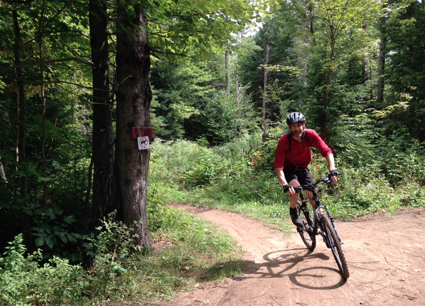
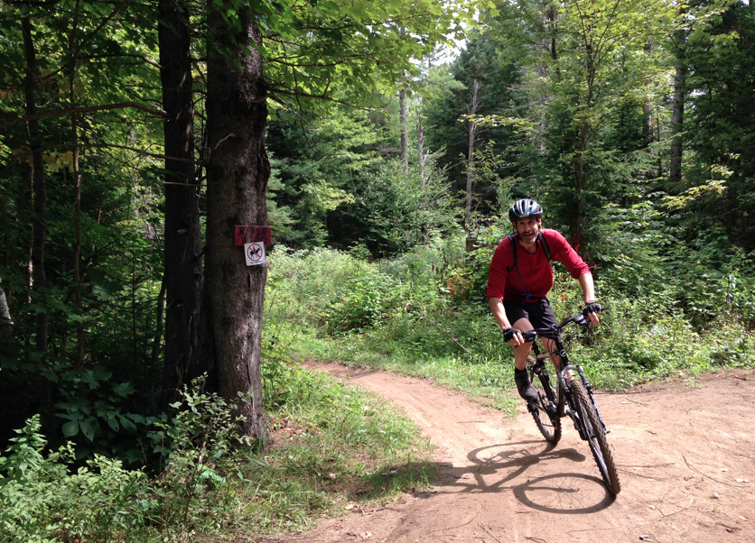

Qu'est-ce qu'un kinésiologue?
Le mot "kinésiologie" vient du grec kinêsis qui signifie "mouvement" et logos qui signifie "étude".
Source : Dufour, M., Gedda, M. (2007). Dictionnaire de kinésithérapie et réadaptation. Paris, France : Éditions Maloine.
De formation universitaire, le kinésiologue est un professionnel de la santé, spécialiste de l'activité physique, qui utilise le mouvement à des fins de prévention, de traitement et de performance.
Source : www.kinesiologue.com
Le kinésiologue-kinésithérapeute, quant à lui, détient un diplôme de deuxième cycle universitaire en exercices thérapeutiques. Il combine ses deux formations pour offrir un traitement thérapeutique sous forme de massothérapie et de mobilisations douces suite à des observations cliniques.
Source : www.monkine.ca
Qui est David Lépine?
Passionné de la course à pied depuis 2007 ainsi que de l'activité physique depuis son jeune âge, David Lépine détient un baccalauréat en kinésiologie depuis 2013 et obtient un diplôme de deuxième cycle en 2014. Il offre une approche humaine et personnalisée pour vous aider à atteindre vos objectifs de façon équilibrée.

 
